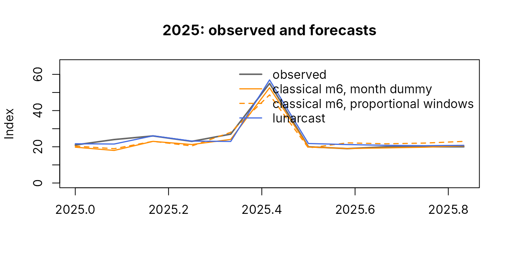
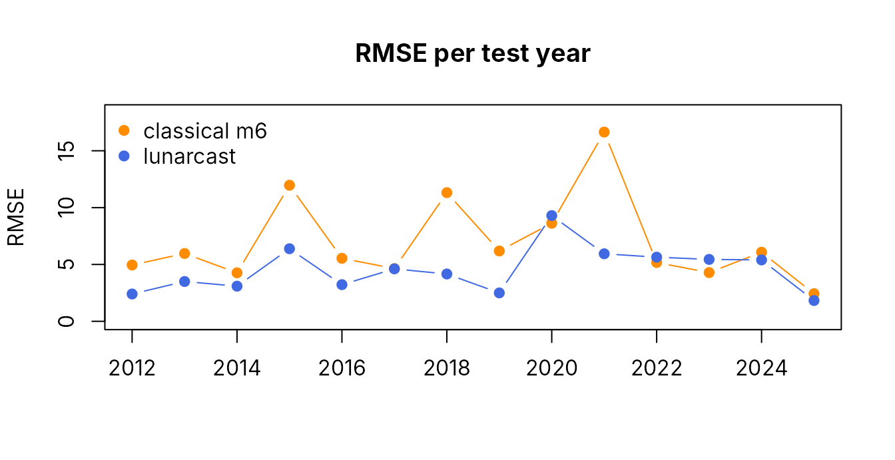

From the classical model to lunarcast
Source:vignettes/classic-vs-lunarcast.Rmd
classic-vs-lunarcast.RmdThis vignette reproduces the classical analysis of the
sapi series (six calendar variation models fitted to
2004–2024 and tested on 2025), adds lunarcast to it, and then shows why
a single test year is not enough to compare the two.
library(lunarcast)
adha <- holiday_dates("idul_adha")
fitri <- holiday_dates("idul_fitri")
train <- window(sapi, end = c(2024, 12))
test <- window(sapi, start = c(2025, 1))The six classical models
Each model is a regression with ARIMA errors on the original scale with the Eid al-Adha month dummy \(V_t\) and a constant effect \(\alpha\):
| Model | Trend | Seasonality |
|---|---|---|
| m1 | deterministic (\(\beta_0 + \beta_1 t\)) | 11 monthly dummies |
| m2 | deterministic | Fourier terms, \(K = 5\) |
| m3 | stochastic (differencing) | 11 monthly dummies |
| m4 | stochastic | Fourier terms, \(K = 5\) |
| m5 | deterministic | seasonal ARIMA |
| m6 | stochastic | seasonal ARIMA |
classic <- calvar_classic_all(train, adha)
classic
#> Six classical calendar variation models
#> model structure
#> m1 deterministic trend + dummy seasonality
#> m2 deterministic trend + Fourier seasonality (K = 5)
#> m3 stochastic trend + dummy seasonality
#> m4 stochastic trend + Fourier seasonality (K = 5)
#> m5 deterministic trend + stochastic seasonality
#> m6 stochastic trend + stochastic seasonality
#> ARIMA effect se AICc
#> ARIMA(3,0,2) 29.83 1.807 1784
#> ARIMA(3,0,2) 29.68 1.803 1782
#> ARIMA(2,1,2) 29.69 1.814 1774
#> ARIMA(2,1,2) 29.70 1.816 1772
#> ARIMA(1,0,2)(2,0,0)[12] 17.53 1.953 1656
#> ARIMA(1,1,1)(1,0,2)[12] 18.90 2.059 1648
#> Note: AICc is comparable only between models with the same order of differencing.The column effect is the constant holiday effect \(\alpha\) in index points. The estimates
differ slightly from an analysis whose dummy omits the second Eid
al-Adha of 2006 (31 December); holiday_dates() includes
both. It is much smaller in m5 and m6 than in m1 to m4: with seasonal
ARIMA errors, part of the holiday effect is carried by the seasonal
autoregression instead of the dummy. With monthly dummies, part of it is
absorbed by the dummy of the months in which the holiday often fell.
lunarcast on the same data
lc <- lunarcast(train, list(adha = adha, fitri = fitri))
#> Warning in sqrt(diag(vcov(fit))): NaNs produced
#> Warning in sqrt(diag(vcov(fit))): NaNs produced
#> Warning in sqrt(diag(vcov(fit))): NaNs produced
#> Warning in predict.Arima(object, n.ahead = h, newxreg = xreg): MA part of model
#> is not invertible
#> Warning in sqrt(diag(vcov(fit))): NaNs produced
#> Warning in predict.Arima(object, n.ahead = h, newxreg = xreg): MA part of model
#> is not invertible
#> Warning in sqrt(diag(vcov(fit))): NaNs produced
#> Warning in predict.Arima(object, n.ahead = h, newxreg = xreg): MA part of model
#> is not invertible
#> Warning in sqrt(diag(vcov(fit))): NaNs produced
#> Warning in predict.Arima(object, n.ahead = h, newxreg = xreg): MA part of model
#> is not invertible
#> Warning in sqrt(diag(vcov(fit))): NaNs produced
#> Warning in predict.Arima(object, n.ahead = h, newxreg = xreg): MA part of model
#> is not invertible
#> Warning in sqrt(diag(vcov(fit))): NaNs produced
#> Warning in predict.Arima(object, n.ahead = h, newxreg = xreg): MA part of model
#> is not invertible
#> Warning in sqrt(diag(vcov(fit))): NaNs produced
#> Warning in predict.Arima(object, n.ahead = h, newxreg = xreg): MA part of model
#> is not invertible
#> Warning in sqrt(diag(vcov(fit))): NaNs produced
#> Warning in predict.Arima(object, n.ahead = h, newxreg = xreg): MA part of model
#> is not invertible
#> Warning in sqrt(diag(vcov(fit))): NaNs produced
#> Warning in predict.Arima(object, n.ahead = h, newxreg = xreg): MA part of model
#> is not invertible
#> Warning in predict.Arima(object, n.ahead = h, newxreg = xreg): MA part of model
#> is not invertible
#> Warning in sqrt(diag(vcov(fit))): NaNs produced
#> Warning in predict.Arima(object, n.ahead = h, newxreg = xreg): MA part of model
#> is not invertible
#> Warning in sqrt(diag(vcov(fit))): NaNs produced
#> Warning in predict.Arima(object, n.ahead = h, newxreg = xreg): MA part of model
#> is not invertible
#> Warning in sqrt(diag(vcov(fit))): NaNs produced
#> Warning in predict.Arima(object, n.ahead = h, newxreg = xreg): MA part of model
#> is not invertible
#> Warning in sqrt(diag(vcov(fit))): NaNs produced
#> Warning in predict.Arima(object, n.ahead = h, newxreg = xreg): MA part of model
#> is not invertible
#> Warning in sqrt(diag(vcov(fit))): NaNs produced
#> Warning in predict.Arima(object, n.ahead = h, newxreg = xreg): MA part of model
#> is not invertible
#> Warning in sqrt(diag(vcov(fit))): NaNs produced
#> Warning in predict.Arima(object, n.ahead = h, newxreg = xreg): MA part of model
#> is not invertible
#> Warning in sqrt(diag(vcov(fit))): NaNs produced
#> Warning in predict.Arima(object, n.ahead = h, newxreg = xreg): MA part of model
#> is not invertible
lc
#> lunarcast: Regression with ARIMA(4,0,4) errors | AICc = -278.1
#> Structure (cv, 1se): deterministic + none, d = 0
#> Cross-validated RMSE of the candidate structures:
#> structure RMSE SE
#> stochastic + fourier(K=2) 6.78 1.33
#> deterministic + SARMA(2,0,0) 7.07 1.08
#> stochastic + dummy 7.47 1.25
#> stochastic + SARMA(2,0,0) 7.74 1.85
#> deterministic + none 8.05 1.24
#> stochastic + none 8.24 1.70
#> deterministic + fourier(K=4) 8.27 1.27
#> deterministic + dummy 8.60 1.39
#>
#> adha: two-level effect, window [-3, +7] days, level 2 = rw (CV-RMSE 0.19)
#> event alpha se ratio
#> 2004-02-01 0.0532 0.1718 1.055
#> 2005-01-21 0.3425 0.0901 1.408
#> 2006-01-10 -0.2131 0.0797 0.808
#> 2006-12-31 -0.2204 0.1537 0.802
#> 2007-12-20 0.1460 0.0704 1.157
#> 2008-12-08 0.3466 0.0716 1.414
#> 2009-11-27 0.6393 0.1220 1.895
#> 2010-11-17 0.4581 0.0807 1.581
#> 2011-11-06 0.7491 0.0728 2.115
#> 2012-10-26 0.7979 0.1121 2.221
#> 2013-10-15 1.0197 0.0814 2.772
#> 2014-10-05 0.8608 0.0903 2.365
#> 2015-09-24 0.8881 0.0888 2.430
#> 2016-09-12 1.1601 0.0788 3.190
#> 2017-09-01 1.3443 0.1060 3.836
#> 2018-08-22 1.2144 0.0822 3.368
#> 2019-08-11 1.2678 0.0772 3.553
#> 2020-07-31 0.8805 0.1177 2.412
#> 2021-07-20 0.9048 0.0814 2.472
#> 2022-07-10 0.9604 0.0842 2.613
#> 2023-06-29 1.1169 0.1219 3.055
#> 2024-06-17 0.8955 0.0850 2.449
#>
#> fitri: constant effect, window [-28, +3] days
#> alpha se ratio
#> 0.163 0.0315 1.18One test year: 2025
fc_classic <- forecast(classic, h = length(test))
fc_lc <- forecast(lc, h = length(test))
acc <- do.call(forecast_accuracy,
c(list(actual = test), fc_classic, list(lunarcast = fc_lc)))
acc[, -1] <- round(acc[, -1], 2)
acc
#> model RMSE MAE MAPE sMAPE
#> 1 m1 6.13 4.54 22.07 18.25
#> 2 m2 6.64 4.95 23.91 19.48
#> 3 m3 4.67 3.57 17.26 15.19
#> 4 m4 4.67 3.58 17.34 15.29
#> 5 m5 3.55 2.68 12.70 11.49
#> 6 m6 2.43 1.72 6.65 7.15
#> 7 lunarcast 4.40 3.84 17.07 15.29
plot(test, ylim = c(0, max(test, fc_lc$mean) * 1.15), lwd = 2, col = "grey40",
xlab = "", ylab = "Index", main = "2025: observed and forecasts")
lines(fc_classic$m6$mean, col = "darkorange", lwd = 1.5)
lines(fc_lc$mean, col = "royalblue", lwd = 1.5)
legend("topright", c("observed", "classical m6", "lunarcast"), bty = "n",
col = c("grey40", "darkorange", "royalblue"), lwd = c(2, 1.5, 1.5))
In 2025 the classical m6 model is the most accurate. A single test year is, however, a fragile basis for comparison: in 2025 Eid al-Adha fell in June for the third year in a row, the ideal situation for a seasonal ARIMA model, which simply repeats last year’s June. The difficult years are those in which the holiday moves to another month, and they do not occur every year.
Fourteen test years: rolling origin
rolling_origin() refits every model at the end of each
year from 2011 to 2024 and forecasts the following year, so that 14 test
years (2012 to 2025, 167 months) are used. Running it for all models
takes some time; the results for sapi are stored in the
package:
r <- read.csv(system.file("extdata", "rolling_sapi.csv", package = "lunarcast"))
r$model <- factor(r$model, levels = unique(r$model))
rolling_summary(r)
#> all holiday other moving stable median_year
#> classic_m1 10.42 27.12 7.15 11.29 9.90 10.30
#> classic_m2 10.27 26.55 7.12 11.18 9.73 9.94
#> classic_m3 9.75 25.91 6.50 10.43 9.34 10.27
#> classic_m4 9.73 25.83 6.50 10.38 9.34 10.31
#> classic_m5 8.04 20.54 5.65 8.75 7.61 5.68
#> classic_m6 7.95 20.25 5.61 8.82 7.42 5.75
#> lunarcast_aicc 5.73 12.28 4.70 6.13 5.50 4.64
#> lunarcast_none 5.15 9.45 4.55 6.10 4.52 4.84
#> lunarcast_cv_min 5.31 9.96 4.66 5.88 4.97 4.39
#> lunarcast 5.00 8.06 4.62 5.99 4.35 4.51The lunarcast rows differ only in how the trend and seasonal
structure is chosen: by AICc (lunarcast_aicc), fixed
without seasonality (lunarcast_none), by cross-validation
with the smallest error (lunarcast_cv_min) or by
cross-validation with the one-standard-error rule
(lunarcast, the default). The code that produced the file
is shown at the end of this vignette.
yearly <- tapply((r$pred - r$actual)^2, list(r$year, r$model),
function(v) sqrt(mean(v)))
years <- as.numeric(rownames(yearly))
plot(years, yearly[, "classic_m6"], type = "b", pch = 19, col = "darkorange",
ylim = c(0, max(yearly[, c("classic_m6", "lunarcast")]) * 1.1),
xlab = "", ylab = "RMSE", main = "RMSE per test year")
lines(years, yearly[, "lunarcast"], type = "b", pch = 19, col = "royalblue")
legend("topleft", c("classical m6", "lunarcast"), col = c("darkorange", "royalblue"),
pch = 19, bty = "n")
What the table shows:
- The best classical model is m6 (stochastic trend and seasonality). The models with seasonal dummies or Fourier terms (m1 to m4) are clearly worse, because the dummies of the months in which the holiday used to fall keep predicting peaks after the holiday has moved.
- lunarcast lowers the overall RMSE from 7.95 to 5.00 and the RMSE in holiday months from 20.25 to 8.06 (about 60%).
- Choosing the structure by AICc picks seasonal ARIMA errors at most origins and gives a clearly worse forecast than cross-validation: a good in-sample fit is not the same as a good forecast.
How the rolling-origin results were produced
hol <- list(adha = adha, fitri = fitri)
spec <- classic$spec
classic_models <- lapply(seq_len(6), function(i) {
force(i)
function(y, h) forecast(calvar_classic(y, adha, spec$trend[i], spec$season[i]),
h = h)$mean
})
names(classic_models) <- paste0("classic_", spec$model)
# the lunarcast variants share the calendar selected at each origin
lunarcast_variant <- function(...) {
function(y, h) {
base <- lunarcast(y, hol, select = "aicc")
fit <- lunarcast(y, hol, window = base$window, effect = base$effect, ...)
forecast(fit, h = h)$mean
}
}
lunarcast_models <- list(
lunarcast_aicc = function(y, h) forecast(lunarcast(y, hol, select = "aicc"), h = h)$mean,
lunarcast_none = lunarcast_variant(season = "none", select = "aicc"),
lunarcast_cv_min = lunarcast_variant(cv_rule = "min"),
lunarcast = lunarcast_variant()
)
r <- rolling_origin(sapi, adha, c(classic_models, lunarcast_models), first = 2012)
rolling_summary(r)The same code is in data-raw/rolling_sapi.R in the
package repository.